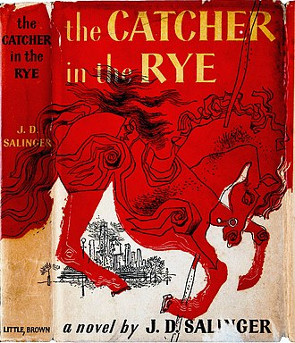

Author:J. D. Salinger
Cover artist:E. Michael Mitchell[1][2]
Country:United States
Language:English
Genre:Realistic fiction, Coming-of-age fiction
Published:July 16, 1951[3]
Publisher:Little, Brown and Company

Introduction
The Catcher in the Rye is a novel by J. D. Salinger, partially published in serial form in 1945–1946 and as a novel
in 1951. It was originally intended for adults but is often read by adolescents for its themes of angst, alienation,
and as a critique on superficiality in society.[4][5] It has been translated widely.[6] About one million copies are
sold each year, with total sales of more than 65 million books.[7] The novel's protagonist Holden Caulfield has
become an icon for teenage rebellion.[8] The novel also deals with complex issues of innocence, identity, belonging,
loss, connection, sex, and depression.
The novel was included on Time Magazine's 2005 list of the 100 best English-language novels written since 1923,[9]
and it was named by Modern Library and its readers as one of the 100 best English-language novels of the 20th
century.[10][11][12] In 2003, it was listed at number 15 on the BBC's survey The Big Read.
Plot Summary
Holden Caulfield, a depressed 17-year-old, lives in an unspecified institution in California after the end of World
War II. After his discharge within a month, he intends to go live with his brother D.B., an author and war veteran
with whom Holden is angry for becoming a Hollywood screenwriter.
Holden recalls the events of a single night during the previous Christmas, beginning at Pencey Preparatory Academy,
a boarding school in Pennsylvania. Holden has just learned that he won't be allowed back at Pencey after the
Christmas break because he had failed all classes except English. After forfeiting a fencing match in New York by
forgetting the equipment on the subway, he says goodbye to his history teacher, Mr. Spencer, who is a well-meaning
but long-winded old man. Spencer offers him advice and simultaneously embarrasses Holden by criticizing his history
exam.
Back at his dorm, Holden's dorm neighbor, Robert Ackley, who is unpopular among his peers, disturbs Holden with his
impolite questioning and mannerisms. Holden, who feels sorry for Ackley, tolerates his presence. Later, Holden
agrees to write an English composition for his roommate, Ward Stradlater, who is leaving for a date. Holden and
Stradlater normally hang out well together, and Holden admires Stradlater's physique. He is distressed to learn that
Stradlater's date is Jane Gallagher, with whom Holden was infatuated and feels the need to protect. That night,
Holden decides to go to a Cary Grant comedy with Mal Brossard and Ackley. Since Ackley and Mal had already seen the
film, they end up just playing pinball and returning to Pencey. When Stradlater returns hours later, he fails to
appreciate the deeply personal composition Holden wrote for him about the baseball glove of Holden's late brother
Allie who died from leukemia a few years prior and refuses to say whether he slept with Jane. Enraged, Holden
punches him, and Stradlater easily wins the fight. When Holden continues insulting him, Stradlater leaves him lying
on the floor with a bloody nose. Holden goes to the room of Ackley, who is already asleep, and doesn't give him any
attention. Fed up with the "phonies" at Pencey Prep, Holden decides to leave Pencey early and catches a train to New
York. Holden intends to stay away from his home until Wednesday when his parents would have received notification of
his expulsion. Aboard the train, Holden meets the mother of a wealthy, obnoxious Pencey student, Ernest Morrow, and
makes up nice but false stories about her son.
In a taxicab, Holden asks the driver whether the ducks in the Central Park lagoon migrate during winter, a subject
he brings up often, but the man barely responds. Holden checks into the Edmont Hotel and spends an evening dancing
with three tourists at the hotel lounge. Holden is disappointed that they are unable to hold a conversation.
Following an unpromising visit to a nightclub, Holden becomes preoccupied with his internal angst and agrees to have
a prostitute named Sunny visit his room. His attitude toward the girl changes when she enters the room and takes off
her clothes. Holden, who is a virgin, says he only wants to talk, which annoys her and causes her to leave. Even
though he maintains that he paid her the right amount for her time, she returns with her pimp Maurice and demands
more money. Holden insults Maurice, Sunny takes money from Holden's wallet, and Maurice snaps his fingers on
Holden's groin and punches him in the stomach. Afterward, Holden imagines that he has been shot by Maurice and
pictures murdering him with an automatic pistol.
The next morning, Holden, becoming increasingly depressed and in need of personal connection, calls Sally Hayes, a
familiar date. Although Holden claims that she is "the queen of all phonies," they agree to meet that afternoon to
attend a play at the Biltmore Theater. Holden shops for a special record, "Little Shirley Beans", for his
10-year-old sister Phoebe. He spots a small boy singing "If a body catch a body coming through the rye", which lifts
his mood. After the play, Holden and Sally go ice skating at Rockefeller Center, where Holden suddenly begins
ranting against society and frightens Sally. He impulsively invites Sally to run away with him that night to live in
the wilderness of New England, but she is uninterested in his hastily conceived plan and declines. The conversation
turns sour, and the two angrily part ways.
Holden decides to meet his old classmate, Carl Luce, for drinks at the Wicker Bar. Holden annoys Carl, whom Holden
suspects of being gay, by insistently questioning him about his sex life. Before leaving, Luce says that Holden
should go see a psychiatrist, to better understand himself. After Luce leaves, Holden gets drunk, awkwardly flirts
with several adults, and calls an icy Sally. Exhausted and out of money, Holden wanders over to Central Park to
investigate the ducks, accidentally breaking Phoebe's record on the way. Nostalgic, he heads home to see his sister
Phoebe. He sneaks into his parents' apartment while they are out, and wakes up Phoebe — the only person with whom he
seems to be able to communicate his true feelings. Although Phoebe is happy to see Holden, she quickly deduces that
he has been expelled, and chastises him for his aimlessness and his apparent disdain for everything. When asked if
he cares about anything, Holden shares a selfless fantasy he has been thinking about (based on a mishearing of
Robert Burns's Comin' Through the Rye), in which he imagines himself as making a job of saving children running
through a field of rye by catching them before they fell off a nearby cliff (a "catcher in the rye"). Holden breaks
down in tears, and his sister tries to console him.
When his parents return home, Holden slips out and visits his former and much-admired English teacher, Mr. Antolini,
who expresses concern that Holden is headed for "a terrible fall". Mr. Antolini advises him to begin applying
himself and provides Holden with a place to sleep. Holden is upset when he wakes up to find Mr. Antolini patting his
head, which he interprets as a sexual advance. He leaves and spends the rest of the night in a waiting room at Grand
Central Terminal, where he sinks further into despair and expresses regret over leaving Mr. Antolini. He spends most
of the morning wandering Fifth Avenue.
Losing hope of finding belonging or companionship in the city, Holden impulsively decides that he will head out West
and live a reclusive lifestyle in a log cabin. He decides to see Phoebe at lunchtime to explain his plan and say
goodbye. While visiting Phoebe's school, Holden sees graffiti containing a curse word and becomes distressed by the
thought of children learning the word's meaning and tarnishing their innocence. When he meets Phoebe at the
Metropolitan Museum of Art, she arrives with a suitcase and asks to go with him, even though she was looking forward
to acting as Benedict Arnold in a play that Friday. Holden refuses to let her come with him, which upsets Phoebe. He
tries to cheer her up by allowing her to skip school and taking her to the Central Park Zoo, but she remains angry.
They eventually reach the zoo's carousel, where Phoebe reconciles with Holden after he buys her a ticket. Holden is
finally filled with happiness and joy at the sight of Phoebe riding the carousel.
Holden finally alludes to encountering his parents that night and "getting sick", mentioning that he will be
attending another school in September. Holden says that he doesn't want to tell anything more because talking about
them has made him find himself missing his former classmates.
History
Various older stories by Salinger contain characters similar to those in The Catcher in the Rye. While at Columbia
University, Salinger wrote a short story called "The Young Folks" in Whit Burnett's class; one character from this
story has been described as a "thinly penciled prototype of Sally Hayes". In November 1941 he sold the story "Slight
Rebellion off Madison", which featured Holden Caulfield, to The New Yorker, but it wasn't published until December
21, 1946, due to World War II. The story "I'm Crazy", which was published in the December 22, 1945 issue of
Collier's, contained material that was later used in The Catcher in the Rye.
In 1946, The New Yorker accepted a 90-page manuscript about Holden Caulfield for publication, but Salinger later
withdrew it.[13]